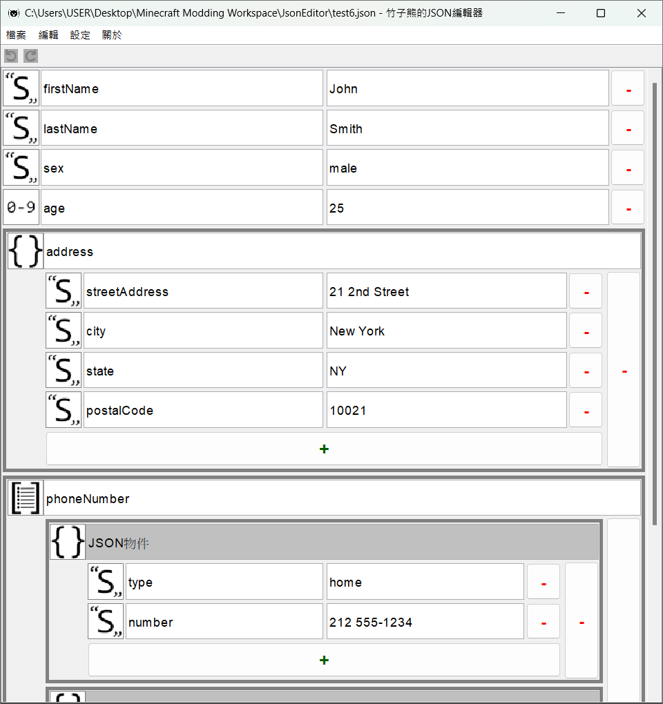

竹子熊的JSON編輯器
版本：0.0.0 (Beta)
版本：0.0.0 (Beta)
竹子熊的JSON編輯器（以下簡稱「JSON編輯器」）是一款由Java寫成，用於編輯JSON格式檔案的程式。
JSON，全稱JavaScript Object Notation，是一種獨立於程式語言（即便全稱包含JavaScript）、輕量級的資料交換格式，應用十分廣泛。
JSON擁有六種資料類型：布林值、數值、字串、空值、物件跟陣列（參見：https://www.json.org/json-zh.html（簡體中文）），其中物件跟陣列還可以再包含其他JSON元素。通常一個JSON檔案會以物件或陣列為根元素，其中可能再包含多個物件或陣列，並可能形成複雜的資料結構，此時，使用「JSON編輯器」開啟它，也許是個不錯的選擇。
透過「JSON編輯器」，就可以非常清楚的看到JSON檔案中的資料結構（如上圖）。此外，透過「JSON編輯器」編輯JSON檔案，還可以避免遺漏標點符號導致格式錯誤等問題。
「JSON編輯器」在不論讀取或儲存檔案，均使用「UTF-8」編碼。如果檔案的編碼不是UTF-8，使用「JSON編輯器」開啟後，可能會出現亂碼（尤其是含有非ASCII字元的檔案），需特別注意。
在0.1.0版本之前，「JSON編輯器」不會支援JSON當中的null（空值），所有null在程式內均會被轉換為JSON字串"null"，且沒有任何方法可以在「JSON編輯器」中新增「空值」。
如果JSON檔案中有null，且其具有高度重要性時，不建議在「JSON編輯器」能夠支援之前，使用程式開啟檔案，甚至進行編輯並儲存。
任何元素都能作為JSON檔案的「根元素」，然而，「JSON編輯器」只允許「JSON物件」和「JSON陣列」作為根元素。
當在「JSON編輯器」裡開始編輯新的JSON檔案時，根元素始終是「JSON物件」。只有開啟根元素為「JSON陣列」的JSON檔案時，根元素才會變成「JSON陣列」。
JSON的字串（包含「鍵」）有跳脫序列，用來表示一些控制字元（如換行、Tab等），或雙引號（"）、反斜線（\）等有其他含意的字元。
雖然使用「JSON編輯器」編輯JSON字串（包含「鍵」），像雙引號（"）就不需要使用\"代替，然而大部分在JSON字串中應用跳脫序列所代表的字元（如：換行等）即使在「JSON編輯器」中也沒辦法直接輸入。因此在「JSON編輯器」中編輯JSON字串（包含「鍵」）時，亦有跳脫序列。
在「JSON編輯器」裡編輯JSON字串時所有可用的跳脫序列如下：
\\：\本身。\b：退格符（U+0008）。\f：換頁符（U+000C）。\n：換行符（U+000A）。\r：回車（U+000D）。\t：水平製表符（U+0009）。\uXXXX（XXXX為四位十六進制數字）：UTF-16編碼中，XXXX所代表的字元。當\字元後緊鄰的字元不包含以上任何一種（甚至沒有字元），就會輸出「\\」（在JSON字串中代表\本身）以及緊鄰字元本身（如果有）。
\和\\的輸出結果都是\\。\u718A的輸出結果是熊（U+718A），而\u718的輸出結果是\\u718。\a的輸出結果是\\a。如果JSON字串（包含「鍵」）中使用到\這個字元本身，仍建議一律使用\\表示，避免意外發生。
| 快捷鍵 | 動作 | 備註 |
|---|---|---|
| Ctrl + Z | 復原 | |
| Ctrl + Y | 重做 | |
| Ctrl + N | 新建檔案 | |
| Ctrl + O | 開啟舊檔 | |
| Ctrl + S | 儲存檔案 | |
| Ctrl + Shift + S | 另存新檔 |
「JSON編輯器」需要Java 17以上版本才能運行，如果你的電腦沒有安裝Java 17或更高版本，可以考慮從以下兩個地方取得（兩者可能略有不同，但不影響「JSON編輯器」執行）：
如果電腦已經有安裝Java，或者剛安裝完，可以打開命令行（如Windows系統中的cmd），輸入命令java --version，即可檢查Java版本。
※近期「JSON編輯器」的Java最低所需版本可能會升至Java 21，因此安裝Java時，亦可考慮直接安裝Java 21。
en_us） *預設語言zh_tw）zh_cn）settings.properties）「JSON編輯器」的設定儲存在settings.properties檔案中，可以在程式內透過設定頁面更改，也可以從外部更改（不建議這麼做）。
目前settings.properties中的所有設定如下表所示，當中所有設定皆可於程式內更改（有些設定需要「啟用實驗性功能」才能於程式內更改）。
| 鍵 | 類型 | 預設值 | 備註 |
|---|---|---|---|
language |
語言代碼 | en_us |
|
isExperimentalFeaturesEnabled |
布林值 | false |
是否啟用實驗性功能。須重啟程式，變更才會生效。 |
fontFamily |
字族名稱 | Dialog |
Dialog是Java預設字族的名稱。實驗性功能 |
fontSize |
整數值 | 15 |
字體大小。最小值為8，最大值為28。 |
enablesPrettyPrinting |
布林值 | false |
相較於未啟用時，啟用此項後儲存的JSON檔案可讀性較高（經過排版），但檔案大小會稍大。 |
enablesHtmlEscaping |
布林值 | false |
啟用此項後，儲存JSON檔案時，會將=、>、<等於HTML中有特殊功能的字元轉成跳脫序列。 |
enablesUnicodeEscaping |
布林值 | false |
啟用此項後，儲存JSON檔案時，會將「非ASCII字元」轉成Unicode跳脫序列。實驗性功能 |
對於尚處於「實驗性功能」的設定，一旦將「實驗性功能」禁用以後重啟「JSON編輯器」，其設定值將回歸預設值。
如果「JSON編輯器」開啟時在settings.properties檔案中發現「未知設定」時，會特別紀錄。當使用者於程式內更改設定並套用時，程式會覆寫該檔案，而先前特別儲存的「未知設定」便可保留在檔案中（位於註釋「Unknown Properties」之下）。settings.properties檔案中的「註釋」則無此機制（會於覆寫後消失。）。
「JSON編輯器」中的插件類似知名遊戲Minecraft中的資料包，可在不需撰寫任何程式碼的情況下，添加部分功能或內容到「JSON編輯器」中。
插件可以是一個資料夾，或一個ZIP壓縮檔（附檔名必須為.zip），其中必須包含plugin.json。
插件必須放在「plugins」資料夾（首次開啟「JSON編輯器」時會自動創建）或其中的資料夾裡。
「JSON編輯器」在搜尋插件時，會讀取「plugins」資料夾以下的所有資料夾及ZIP壓縮檔。如果資料夾中找到plugin.json，則該資料夾將視為插件檔案，否則「JSON編輯器」會繼續讀取該資料夾內的資料夾或ZIP壓縮檔；如果ZIP壓縮檔中找到plugin.json，則該壓縮檔將視為插件檔案，否則「JSON編輯器」會直接忽略該壓縮檔（不會進一步搜尋）。
lang<語言ID>.jsonplugin.jsonplugin.jsonplugin.json是每個插件必有的檔案，檔案中包含「插件ID」等資訊，並作為「JSON編輯器」識別插件的主要依據。
plugin.json檔案的結構如下。紅色粗體字代表必須包含的JSON元素（必需項）。
a-z），而其餘部分只能包含小寫拉丁字母（a-z）、數字（0-9）和下劃線（_），長度需為2～64個字元。ID錯誤將導致插件無法被正常載入！| 插件格式版本 | 「JSON編輯器」版本 | 更動或備註 |
|---|---|---|
| 1 | 0.0.0- |
|
語言檔用於替「JSON編輯器」添加翻譯，不論是補充原版翻譯的不足、添加語言，或單純的添加插件翻譯。
每個語言檔（包含原版翻譯）都是JSON格式的檔案，副檔名必須為.json，且放置在lang資料夾中。其檔名將會作為「語言代碼」，供「JSON編輯器」識別語言。
語言代碼的第一個字元必須為小寫拉丁字母（a-z），而其餘部分只能包含小寫拉丁字母（a-z）、數字（0-9）和下劃線（_），長度需為2～64個字元。錯誤的語言代碼將導致語言檔無法被正常載入！
「JSON編輯器」在尋找翻譯文字時，會先搜尋使用者當前語言，找不到或其值為空字串時，會從語言檔中指定的「替代語言」中尋找；若語言檔中沒有指定「替代語言」，或者在「替代語言」中依舊找不到或其值為空字串，則會在「預設語言」（en_us）中尋找；若再次找不到，或其值為空字串，則會直接使用「翻譯鍵名」。
因此，替插件添加翻譯時，務必製作en_us.json。
如果有多個「相同語言」的語言檔中出現相同「翻譯鍵名」（發生「翻譯鍵名衝突」），「JSON編輯器」會使用優先載入到的。換言之，你無法利用插件覆蓋原版翻譯（因為原版翻譯的載入始終早於插件載入）。
由於此特性，屬於插件內容之翻譯的翻譯鍵名應包含「插件ID」，以降低發生翻譯鍵名衝突的機率。
語言檔有兩種結構，分別如下：
備註：第二種格式的根元素之下可以包含多個字串與物件，並且次序不影響載入與否（但會影響載入順序）。
特別注意，如果顯示翻譯內容的元件不支援換行等行為，那麼即使在語言檔中使用如\n等跳脫序列，實際於程式中也無法達到期望中的效果。
如果你打算製作「JSON編輯器」本身沒支援的語言，就需要特別注意「內容中的參數」。
在「JSON編輯器」中，所有翻譯內容都被視為「格式化字串」處理（格式參見Java文檔，或參考這篇文章），以便在翻譯內容中納入參數，而在原版內容中，便有部分翻譯內容具有參數（諸如檔案名稱等）。因為翻譯內容皆為格式化文字，若內容包含%，應使用%%代表（有點像跳脫序列中的\\），否則可能導致意外問題發生。
「JSON編輯器」原版內容中，所有帶有參數的翻譯鍵名列表如下：
| 翻譯鍵名 | 參數數量 | 參數說明 |
|---|---|---|
json_editor.save_file.file |
1 |
|
json_editor.error.failed_to_save_file |
1 |
|
json_editor.warning.browse |
1 |
|
json_editor.warning.open_file |
1 |
|
json_editor.warning.open_file.file_not_exist |
1 |
|
此建議遵守與否並不影響語言檔之載入，僅作為製作語言檔時的參考。
語言代碼建議由兩個部分組成：「語言」、「國家或地區」，對於某些語言還可添加「使用文字」的部分（如拉丁字母、西里爾字母等），之間以「下劃線」（_）分隔。雖然語言代碼總字元長度最多可達64字元，但「語言」及「國家或地區」建議約2～4個字元即可。
en_us中，en代表「英文」、us代表「美國」。kk_kz_latin，其中kk代表「哈薩克文」、kz代表「哈薩克」、latin代表「拉丁字母」；若要製作「西里爾字母」版，則其語言代碼可命名為kk_kz_cyrillic，其中cyrillic代表「西里爾字母」。語言名稱類似於語言代碼，由兩個部分組成：「語言」、「國家或地區」，其中「國家或地區」以括號（()，或具有相同或類似意義的符號）包括，並且如果可行，語言名稱應以該語言的方式表示。
en_us的語言名稱為「English (US)」，其中「English」即「英文」、「US」即「美國」。zh_tw，其語言名稱為「繁體中文（台灣）」，當中的「台灣」便是使用全形括號（（））括起。翻譯鍵名應盡可能的表達其意義，且建議使用英文；全部使用小寫字母，並使用「點」（.）分隔每個部分，每個部份中使用「下劃線」（_）連接詞彙（即蛇形命名法）。
json_editor.settings.language，其中json_editor代表「JSON編輯器」本身用到的翻譯鍵名（對於插件內容的翻譯，可替換「插件ID」），settings代表它與設定相關，language代表它與「語言」有關。而json_editor.settings.language實際上就是設定視窗中，「語言」選項的「名稱」所使用的翻譯鍵名。版本：2.10.1
Copyright 2008 Google Inc.
Gson是一款由Google開發（非官方產品）的Java程式庫，主要用於序列化Java物件為JSON，或反序列化JSON為Java物件（Java物件←→JSON）。
「JSON編輯器」使用它來處理JSON，包含讀取與寫出等。
許可協定：Apache License Version 2.0
查看更多：https://github.com/google/gson
zh_cn）